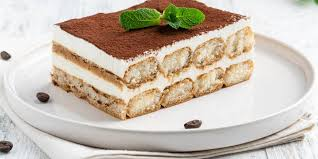

Tiramisú Italiano
Este tiramisú auténtico combina capas de café, mascarpone y cacao en polvo para un postre exquisito y clásico.
Ingredientes
- 300g de bizcochos de soletilla
- 500g de queso mascarpone
- 4 huevos (separar las claras de las yemas)
- 100g de azúcar
- 1 taza de café fuerte (enfriado)
- Cacao en polvo para espolvorear
- Opcional: un chorrito de licor (como Amaretto o Marsala)
Preparación
- Prepara una taza de café fuerte y déjalo enfriar. Agrega un poco de licor si lo deseas.
- En un bol, bate las yemas de huevo con el azúcar hasta obtener una mezcla espumosa y de color claro.
- Agrega el queso mascarpone a la mezcla de yemas y azúcar, y mezcla hasta que esté suave y homogéneo.
- En otro bol, bate las claras a punto de nieve y luego incorpóralas suavemente a la mezcla de mascarpone.
- Remoja brevemente los bizcochos de soletilla en el café frío y colócalos en una capa en el fondo de un molde.
- Extiende una capa de la mezcla de mascarpone sobre los bizcochos. Repite las capas de bizcochos y crema hasta terminar con una capa de crema.
- Refrigera el tiramisú durante al menos 4 horas (mejor si es toda la noche).
- Antes de servir, espolvorea cacao en polvo sobre la superficie.